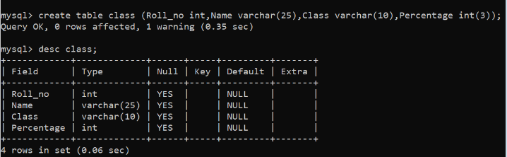
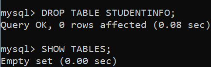
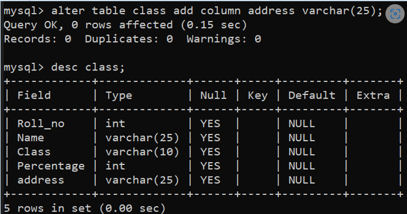
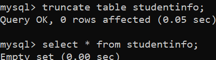

1. Data Definition Language (DDL)
DDL changes the structure of the table like creating a table, deleting a table, altering a table, etc.
All the command of DDL are auto-committed that means it permanently save all the changes in the database.
Here are some commands that come under DDL:
CREATE
ALTER
DROP
TRUNCATE
a. CREATE:
It is used to create a new table in the database.
SYNTAX:
CREATE TABLE TABLE_NAME (COLUMN_NAME DATATYPES[,....]);
Example:
CREATE TABLE EMPLOYEE(Name VARCHAR2(20), Email VARCHAR2(100), DOB DATE);

b. DROP:
It is used to delete both the structure and record stored in the table.
SYNTAX:
DROP TABLE table_name;
Example
DROP TABLE EMPLOYEE;

c. ALTER:
It is used to alter the structure of the database. This change could be either to modify the characteristics of an existing attribute or probably to add a new attribute.
Syntax:
To add a new column in the table
ALTER TABLE table_name ADD column_name COLUMN-definition;
To modify existing column in the table:
ALTER TABLE table_name MODIFY(column_definitions....);
EXAMPLE
ALTER TABLE STU_DETAILS ADD(ADDRESS VARCHAR2(20));
ALTER TABLE STU_DETAILS MODIFY (NAME VARCHAR2(20));

d. TRUNCATE:
It is used to delete all the rows from the table and free the space containing the table.
Syntax:
TRUNCATE TABLE table_name;
Example:
TRUNCATE TABLE EMPLOYEE;
